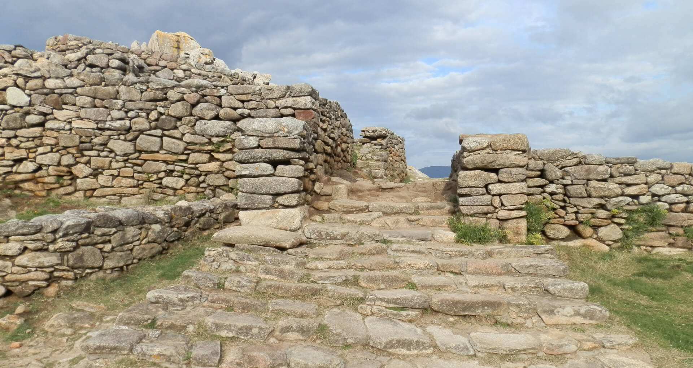

Os
dous barrios habitados estaban separados por unha nova muralla.
Comunicábanse por unha espectacular escaleira de pedra, probablemente a
máis monumental da arquitectura castrexa. Foi descuberta nas campañas
levadas a cabo entre finais dos anos sesenta e inicios da década
seguinte do pasado século polo arqueólogo José María Luengo Martínez,
un dos investigadores que máis intensamente actuou no xacemento.
Está formada por trece chanzos, moi ben deseñados e cunha altura ideal
para o seu remonte a pé. Aparece flanqueada por grosos machóns, que
podería corresponderse co soporte a algún tipo de superestrutura, ben
adintelada ou ben en falsa bóveda, aínda que isto, ao tratarse dunha
escavación antiga, terá difícil comprobación.
Á esquerda da escaleira pódese observar unha pequena estancia axuntada
ao paramento do muro. En base ao achado de numerosas escouras de ferro
e dunha gran área de combustión, foi interpretada no seu momento como
un pequeno taller metalúrxico.
Esta escaleira, que ten a morfoloxía e aspecto dunha auténtica porta, é
o único paso posible para transitar entre os recintos segundo e
terceiro. Ábrese nunha muralla escalonada que cumpre a función de
estrutura de contención, pero que tamén está separando de forma
evidente os dous barrios. Esta segmentación do espazo pode reflectir
aspectos simbólicos, funcionais ou mesmo socias na organización interna
do poboado.